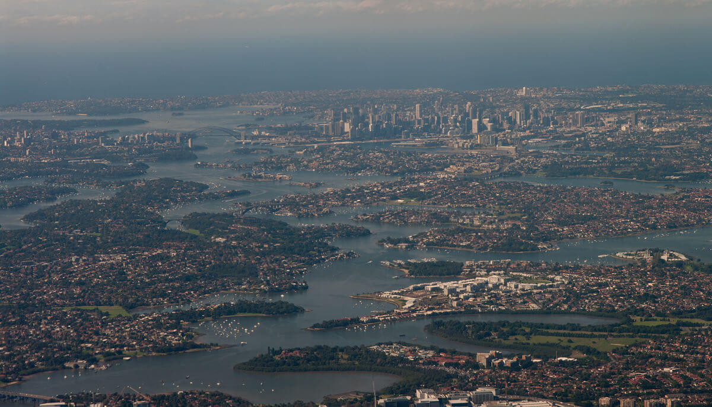
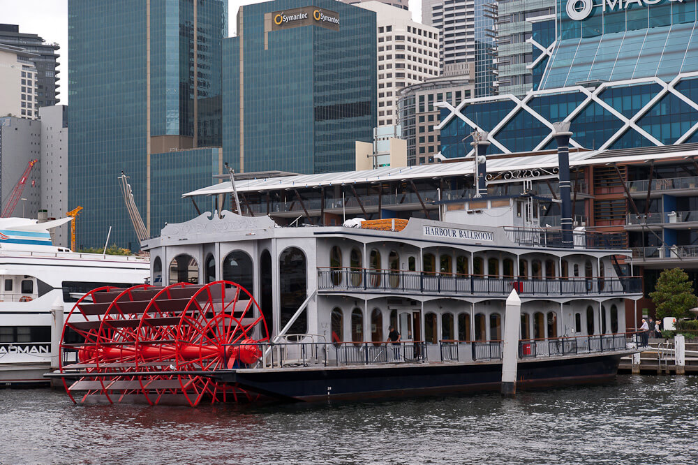

Эскадра Джеймса Кука, исследуя побережье открытой им земли, обнаружила бухту, которую капитан назвал Порт Джэксон в честь спонсора экспедиции. Моряки тогда не ведали, что перед ними раскинулся самый большой естественный залив в мире.
26 мая 1778 г. к его берегу пристал так называемый «Первый флот» — 11 судов с каторжниками в трюмах, ныне это дата Дня Австралии. Сегодня на месте высадки и первых бараков находится центр мегаполиса — Сиднея, постепенно он разросся и поглотил все мысы, бухты и острова залива. Первое поселение колонии Новый Южный Уэльс названо Сиднеем в честь британского министра внутренних дел.
Порт Джэксон извилист, его устье чуть шире километра, что создает защиту от океанского прибоя. Вход обозначен маяками North Head и Hornby Lighthouse, за ними залив разветвляется на три рукава: North Harbour, Middle Harbour и Sydney Harbour (Северную, Среднюю и Сиднейскую бухты). Длина последней 20 км, а глубина — до 60 м — идеальная гавань для кораблей любых размеров, вплоть до авианосцев.

Дарлинг Харбор. Это огромная бухта когда-то была промышленным кластером, международным терминалом порта Сидней. Вся береговая инфраструктура служила делу перевалки, обработки, хранения и дальнейшей транспортировки грузов поступавших со всех концов света.
Теперь это скорее туристический центр города, вобравший в себя гостиницы, выставочные комплексы, шоппинг центры, и прочие развлекательные учреждения. Кроме того, это огромная пешеходная территория.
На выходе из бухты Роуз Бей открывается вид на центр Сиднея
Сиднейская опера.
Бухта Сидней Кав. Сиднейский мост - справа.
Проплывая под сиднейским мостом, направляемся в бухту Лавендер.
Ретро-паровик - передвижной зал для балов.

Круизный теплоход на фоне небоскребов.
ВВЕРХ